Operating Documentation
Direction 5193574-800, Rev# 22
LightSpeed 7.X Service Methods
Module Version 2.0, Version Date 7/24/13
Operating Documentation |
| Last Revised: | 11 March 2013 |
Globally, laws and requirements for patient data privacy have been enacted to protect the health information of individuals against access without consent or authorization. Examples of global privacy standards are: HIPPA - US, Data Protection Act - UK, PIPEDA - Canada, European Union Data Protection Direction - EU.
In order to implement the privacy of patient data, A Data Privacy (EA3 User Authorization) feature is supplied for the system. To enable this feature, it is necessary to configure the system using the System Configuration “reconfig” and EA3 Admin Browser Utilities.
Note: Procedure formally known as HIPAA Configuration
| ||||
| Data Privacy (User Authorization) has been disabled when the
software was loaded on a system during manufacturing. Do not turn
it on without the consent of your customer. Perform the following
steps ONLY IF the customer has specifically requested for it to be
enabled. Consult the Pre-installation questionnaire that the customer has filled out to perform this procedure | ||||
| ||||
| The following instructions are for meant for Service Personal
and define the extent of involvement by Service Personal in the configuration
and check out of the Data Privacy (User Authorization) feature. Service Activity Shall Not Include:
Service Activity Shall Include:
| ||||
When Data Privacy (User Authorization) is enabled (configured), the system will display Logon and Logout pop-ups that will require (or in the latter case optionally require) Users to enter account name and password.
Illustration 1: Data Privacy (User Logon/Logout) Enabled - User Logon
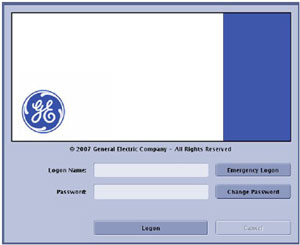
Illustration 2: Data Privacy (User Logon/Logout) Enabled - User Logout

If Data Privacy (User Authorization) is disabled, the system will automatically start Applications and no pop-up window will appear requiring User ID.
In order to enable Data Privacy (User Authorization) feature, the System Configuration (“reconfig ”) utility must be set such that the HIPAA Present preference is set to [On]. Follow the instruction below for enabling the HIPAA Present preference:
If HIPAA Present was set to Off during the software load process (Default Condition from Manufacturing), select the Common Service Desktop, click on the [Utilities] tab, and select Application Shutdown.
Open a Terminal Window and become root:
Type: su -
Type root password and press <Enter>.
Launch the System Configuration Utility by typing: [root@hostname]# reconfig.
Select [Config], then select the [Preferences] tab.
Set HIPAA Present to On , then click [Accept].
Illustration 3: System Configuration “reconfig” Utility - Preference Tab
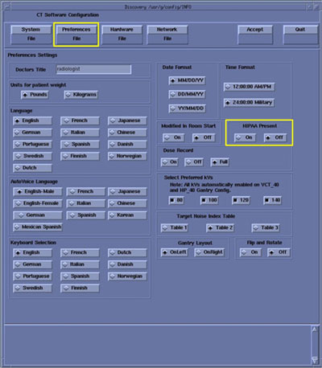
Click [Yes] for reboot. If Application does not start automatically, open a Terminal Window and type: st and press <Enter>. Then select [OK] as needed.
Upon the next System start up, a User Logon Pop-up window will appear, requiring User credentials.
Use Root logon: Logon Name : root, Password : Type root password
In order to enable Data Privacy (User Authorization) feature, the EA3 Admin Browser utility must be set such that the Enable Authorization preference is selected:
Click the [Service] Icon on the Display Monitor, and the Common Service Desktop (CSD) will appear.
Select the [Configuration] Tab on the CSD and find the Configure EA3 selection in the menu.
Illustration 4: Common Service Desktop, Configuration Tab - Configure EA3
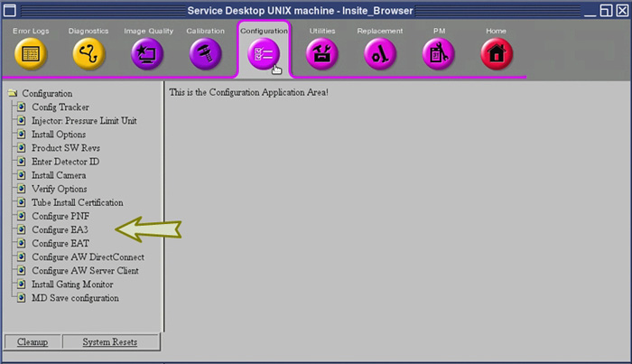
Click on the EA3 Admin Browser Menu item, and the EA3 Administration Logon Screen will appear.
Illustration 5: EA3 Administration Logon Screen
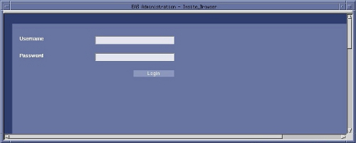
Open the EA3 Admin Browser Utility by entering the Root logon credentials in the EA3 Administration Logon Screen.
Type: root for Username.
Type root password, and click [Login].
Select Enable Authorization option by clicking on the selection at the top of the Application Tab page of the EA3 Admin Browser.
Illustration 6: EA3 Admin Browser, Application Tab - Enable Authorization Selection
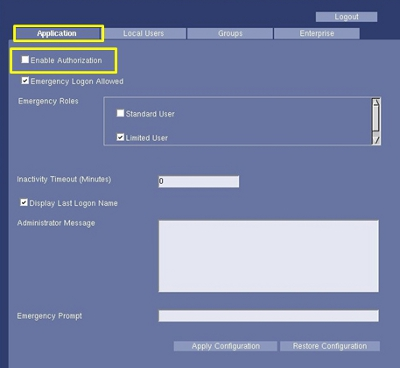
Set Inactivity Timeout value (in Minutes)
Illustration 7: EA3 Admin Browser, Application Tab - Inactivity Timeout
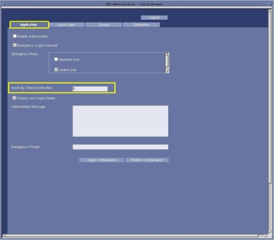
| NOTE: | Inactivity Timeout value (in Minutes) controls the amount of time allowed for inactivity before the User that is automatically logout. This value is only used with the User Authorization feature and is typically set for 60 minutes. If Data Privacy (User Authorization) feature is not being implemented on the system, this value should be set to zero (0) minutes (default). |
Click [Apply Configuration] button and then click on [Logout] button to complete configuration.
| NOTE: | Additionally or instead of, [Enterprise User
Authorization] may be enable via the [EA3 Enterprise
Tab] found in the EA3 Admin Browser. The last tab on the EA3 Admin Browser is the Enterprise tab. On this tab, you can configure the properties necessary to make a connection to an Enterprise directory server (i.e. MSAD, Novell, etc.). The Enterprise Tab is used by the site’s IT (Information Technology) and/or GE Service personnel. It provides connectivity to the site’s remote user database. If you do not have a network established in your hospital or clinic, this tab will not be used. Be prepared to assist the Customer with configuring the system to use the Enterprise Server feature. A detailed explanation and instructions on configuring the Enterprise Tab can be found in the System’s User or Learning and Reference Guide Manuals. |
Service assistance is required for initial setup of User Accounts using EA3 Admin Browser. Until an Administrator Account is created, the Root User credentials (Username and Password) will be required. The following instructions are for creating an Administrator Account local on the system. The EA3 Admin Browser also supports the use of Enterprise Directory Server (i.e. MSAD, Novell, etc.) for importing User Account maintained elsewhere by the Customer.
| NOTE: | A detailed explanation and instructions on configuring Local and Enterprise User Accounts for the system using the EA3 Admin Browser Utility can be found in the System’s User or Learning and Reference Guide Manuals. The EA3 Admin Browser Utility is the tool used for configuring User Accounts. |
| NOTE: | If Dose Check Management feature has already been configured, the Administrator User account may already have been created. |
Access the EA3 Admin Browser Utility for creating an Local Administrator Account on the system using the following processes:
Click the [Service] Icon on the Display Monitor, and the Common Service Desktop (CSD) will appear.
Select the [Utilities] Tab on the CSD and find the EA3 Admin Browser selection in the Utilities/Tools Menu.
Illustration 8: Common Service Desktop, Utilities Tab - EA3 Admin Browser
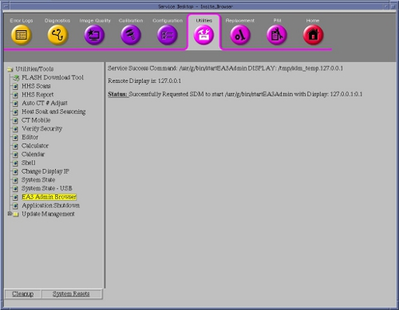
Click on the EA3 Admin Browser Menu item in the [CSD] , and the EA3 Administration Logon Screen will appear.
Illustration 9: EA3 Administration Logon Screen
Logon to the EA3 Admin Browser Utility by entering the Root Logon credentials in the EA3 Administration Logon Screen.
Type: root for Username.
Type root password and click [Login].
The EA3 Admin Browser will appear.
Select the Local Users Tab on the EA3 Admin Browser.
Illustration 10: EA3 Admin Browser - Local Users Page
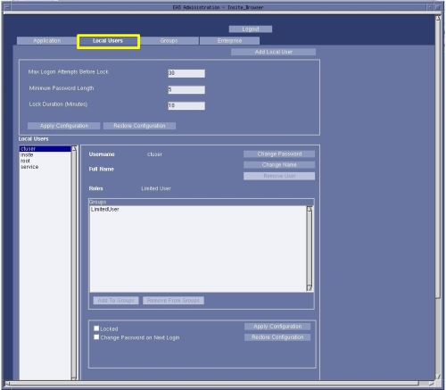
Click [Add Local User], and Add User pop-up window will appear.
Illustration 11: EA3 Admin Browser - Add Local User Button
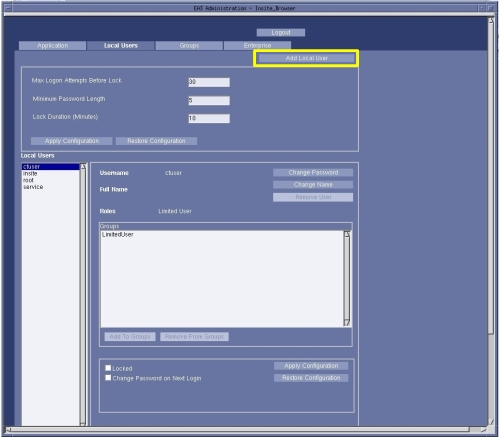
Enter User Information in the Add User pop-up window, then click [Add User].
Illustration 12: Add User Pop-up Window
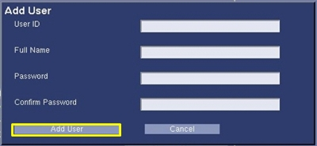
| NOTE: | This User will be assigned EA3 Administrator role/permissions, for the purpose of managing all additional Users. Add Administrator User ID and Password supplied by Customer. |
With the new User selected, click [Add To Group] button, and the Add Membership for User pop-up window will appear.
Illustration 13: EA3 Admin Browser - Add To Group Button
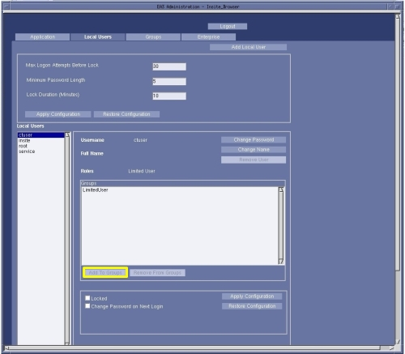
Select Administrator role and click the [Add Membership] button.
Illustration 14: Add Membership for User Pop-up Window
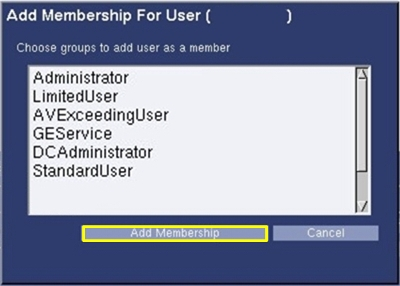
Click [Apply Configuration] button on the Local User Page.
Illustration 15: EA3 Admin Browser, Local User Page - Apply Configuration
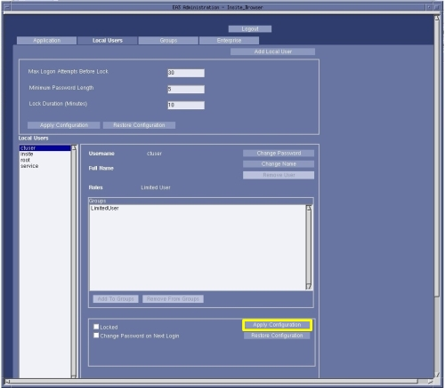
Logout and of EA3 Adminstrator Browser, by clicking on the [Logout] button.
Again select EA3 Admin browser from the CSD menu or the Dose Check Management Tool, this time logon using the Administrator Account credentials.
Turn over system to the Customer for creation of additional EA3 User Accounts and their group membership (roles).
| NOTE: | Once an Administrator User Account is created, the use of the Root User Account will no longer be required. |
EA3 User Account information is backed up in System State. Make certain a current System State is saved after EA3 activities have been completed.
| NOTE: | Failure to back up this information to System State will require manual reentry of all EA3 configuration data or partial data if changes were performed to User Accounts since the last System State was saved. |